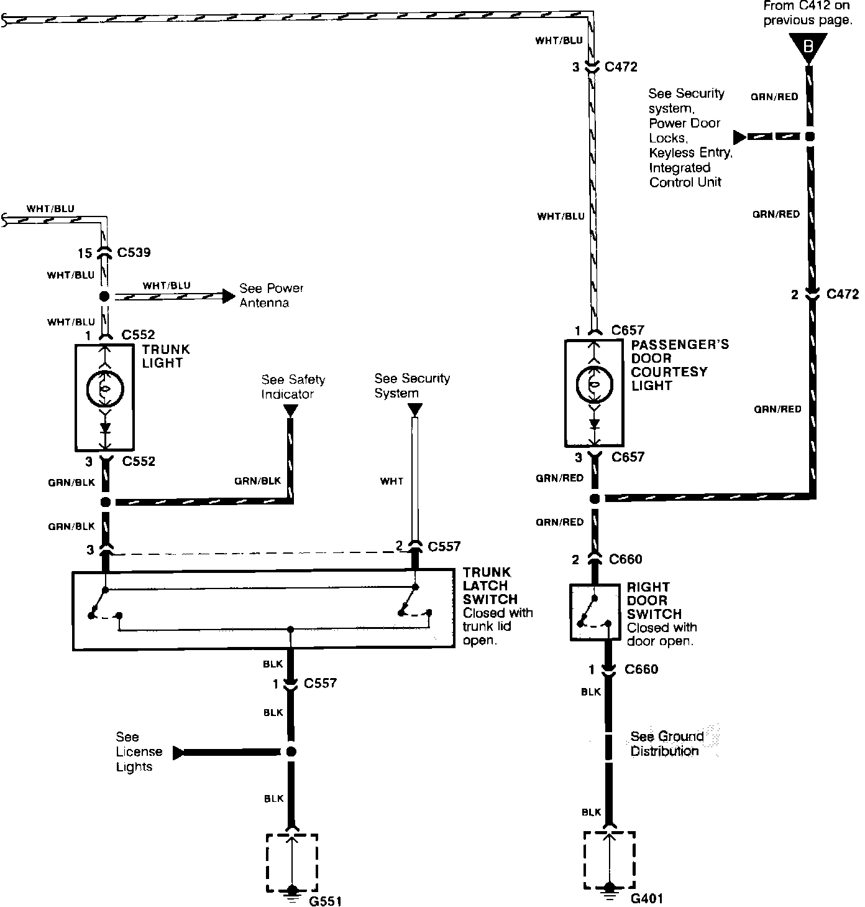
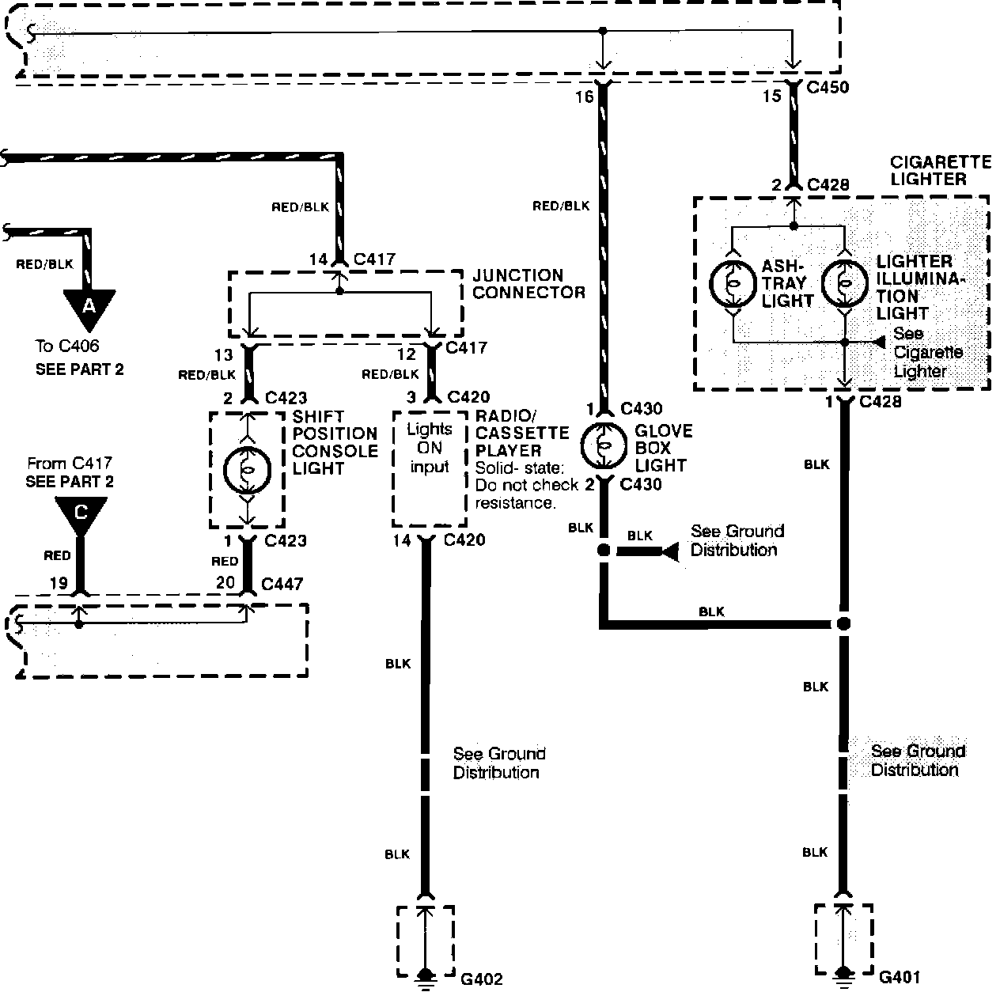
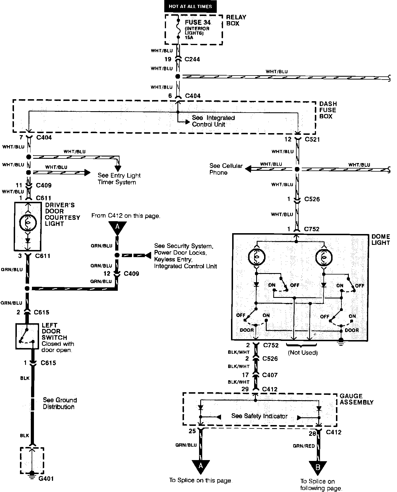
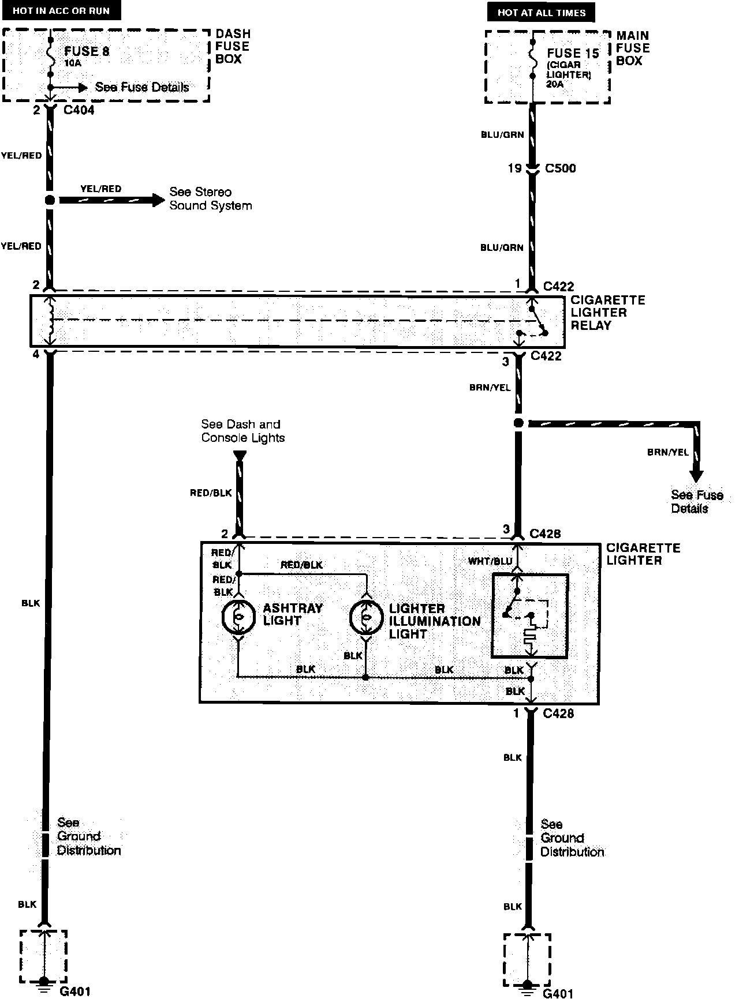
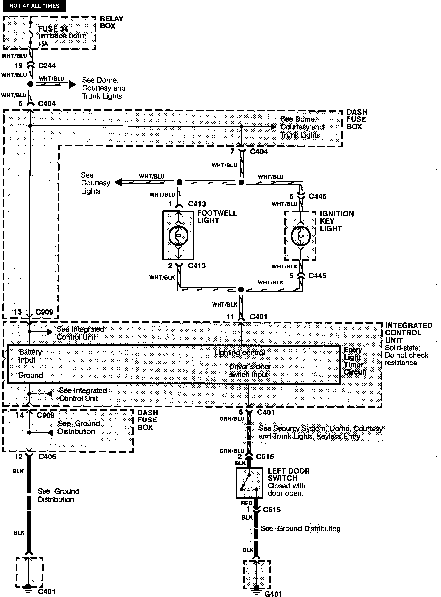
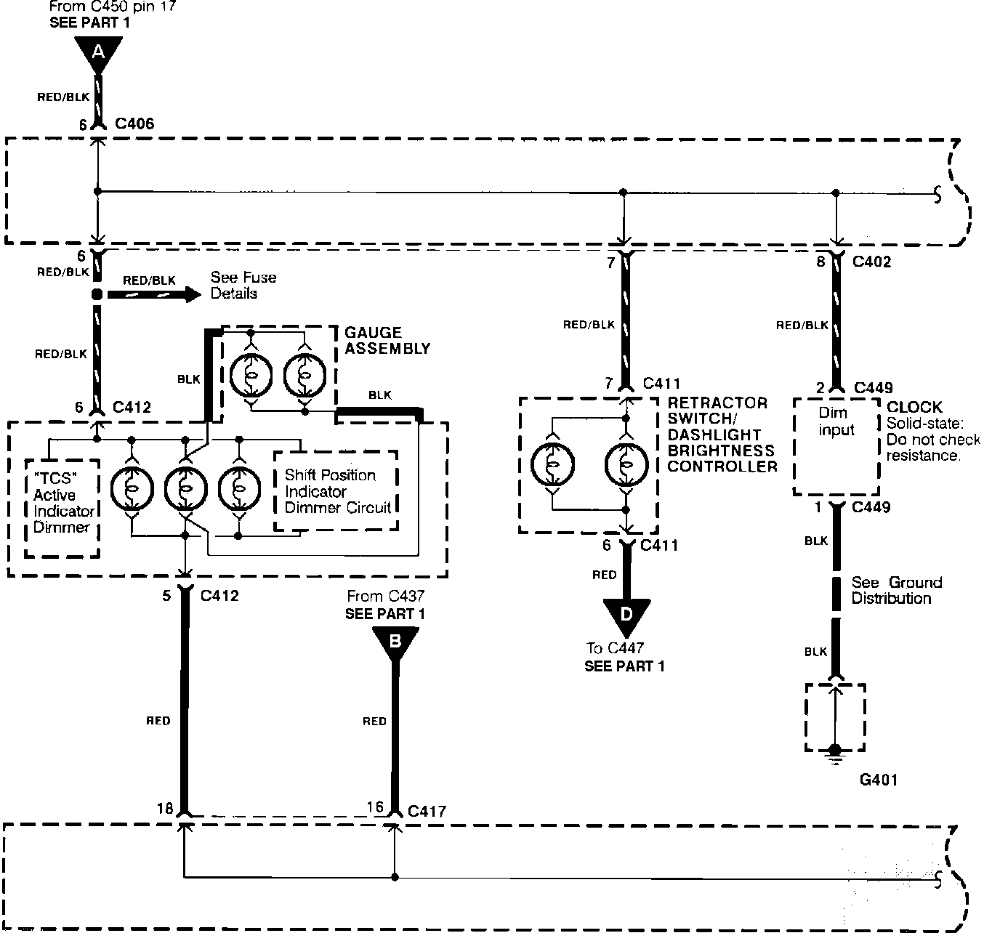
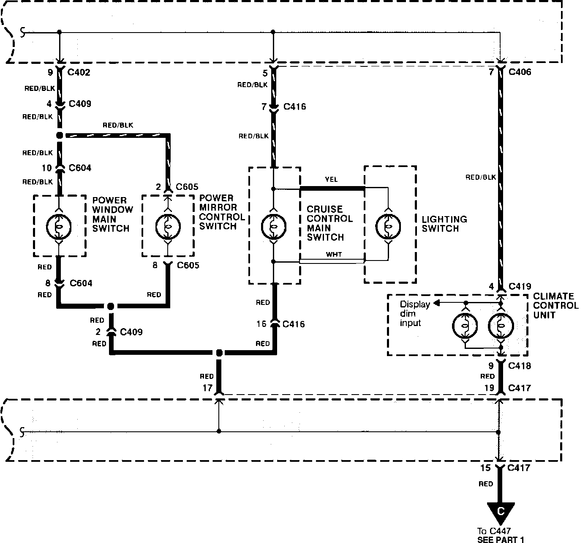

Electrical Diagrams
Dome, Courtesy And Trunk Lights:

Dash And Console Lights:

Dome, Courtesy And Trunk Lights:

Cigarette Lighter:

Entry Light Timer System:

Dash And Console Lights:

Dash And Console Lights:
